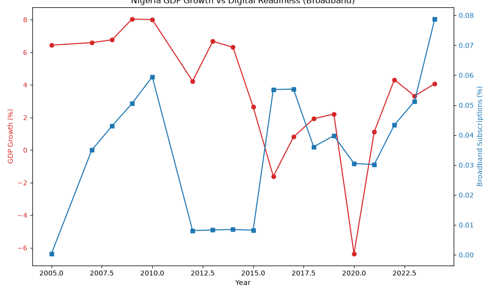

Project Overview
Core Questions
- Can AI improve financial inclusion in Nigeria?
- What industries benefit most?
- What are the risks of AI adoption?
- How can Nigeria leverage AI for economic growth?
Methodology
Our research leverages data from EFInA, SMEDAN, and the World Bank to analyze trends in digital readiness, broadband penetration, and domestic credit to the private sector.
Data & Insights
Visualizing the correlation between GDP Growth and Digital Readiness.

Policy Recommendations
Infrastructure
Expanding broadband access is critical for foundational AI readiness.
SME Support
Facilitating AI tools for alternative credit scoring to boost financial inclusion.
Regulation
Developing safe, ethical AI frameworks tailored to the Nigerian market.
Dive Deeper
Ready to see the empirical data and our full methodology?